.gif)
PISOS
En The Binding of Isaac (TBOI), los pisos (también llamados niveles o floors) son las distintas etapas o zonas que el jugador atraviesa durante una partida. Cada piso representa una parte diferente del sótano o del mundo subterráneo donde Isaac se adentra, y tiene su propio diseño, enemigos, jefes, objetos y temática visual.
Contexto general:
El juego está estructurado como una serie de pisos generados aleatoriamente (roguelike). Cada vez que bajas un piso, aumenta la dificultad: los enemigos hacen más daño, los jefes son más duros y los objetos se vuelven más determinantes. En cada piso, el jugador debe explorar habitaciones hasta encontrar la sala del jefe, vencerlo y avanzar al siguiente nivel.
Tipos de pisos principales:
- 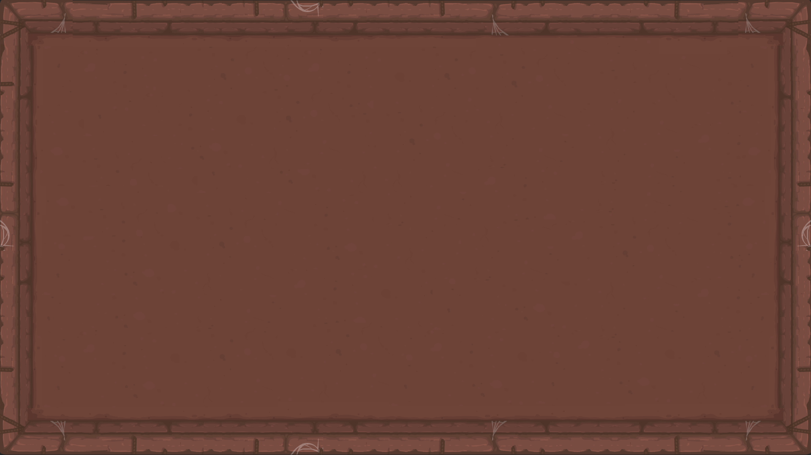Basement / 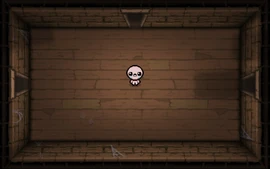Cellar / 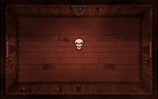Burning Basement (Sótano): Los primeros niveles del juego. Enemigos simples y ambiente doméstico o infernal. Sirven como introducción a las mecánicas.
- 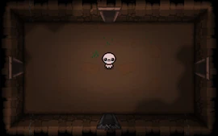Caves / 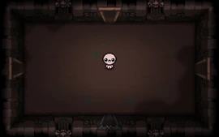Catacombs / 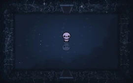Flooded Caves (Cuevas): Segundo conjunto de pisos. Más enemigos voladores y peligros ambientales (rocas, pinchos, etc.).
- 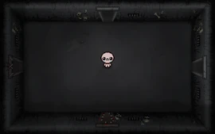Depths / 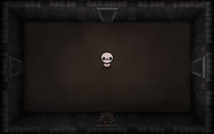Necropolis / 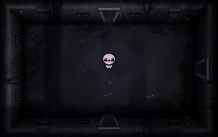Dank Depths (Profundidades): Tercer conjunto. Introduce enemigos más agresivos y el jefe “Mom” (la madre de Isaac).
- 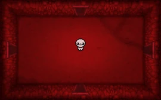Womb / 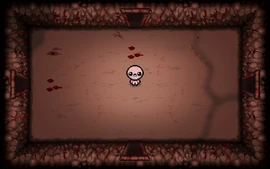Scarred Womb (Útero): El interior del cuerpo de la madre. Aquí los enemigos causan corazones completos de daño. Se pelea contra Mom’s Heart o It Lives.
- 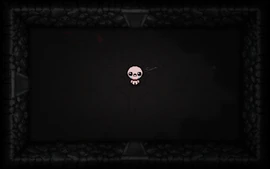Sheol / 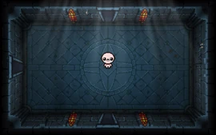Cathedral: Pisos finales alternativos desbloqueables.
- Sheol: Enfrentas a Satanás.
- Cathedral: Enfrentas a Isaac.
- 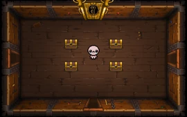The Chest / 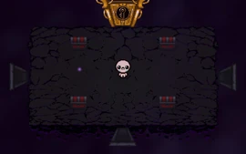The Dark Room: Pisos de final “verdadero”.
- The Chest: Se pelea contra Blue Baby (???).
- The Dark Room: Contra The Lamb.